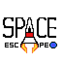

You're a space pilot trying to come back home
Pilot Iron Jhack from the Space Surveillance Corps is now close to Alpha Centaury-220110, home to all humans
previously living on Earth. After a succesful mission on Earth his ship was hit by a solar flare; instantly
damaging
his navigation and resource-administration systems. With a populated asteroid belt and lots of black holes in
the
way will he be able to come back home?
Let's Do It!